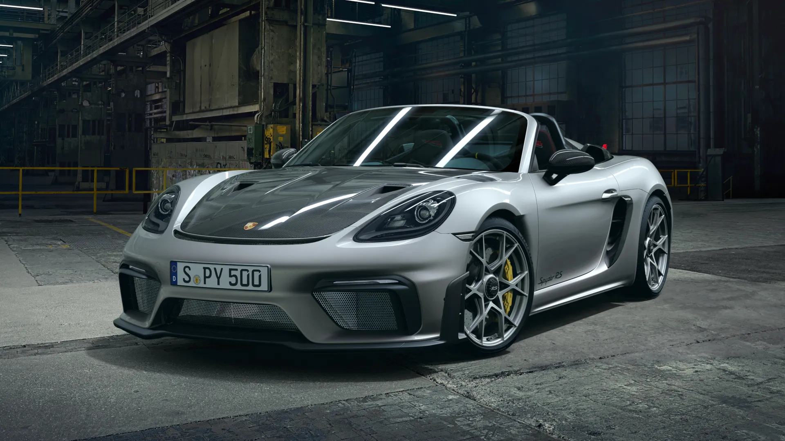
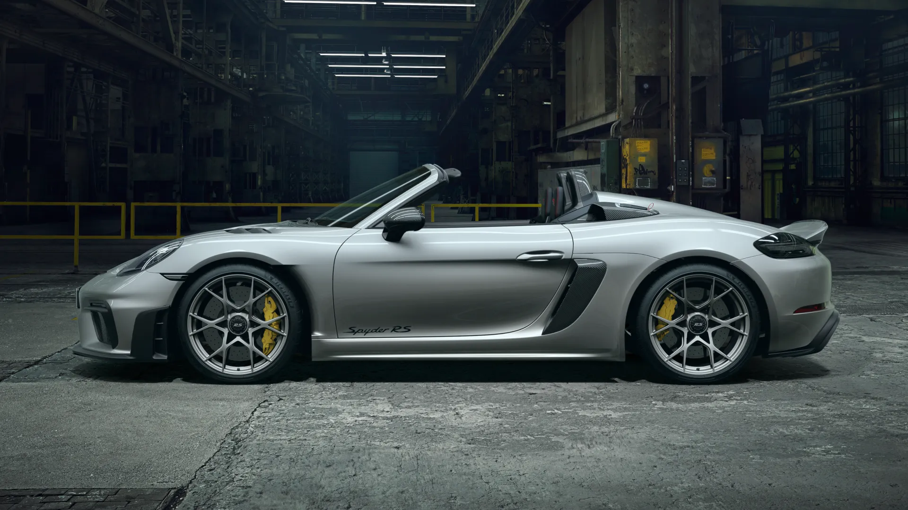
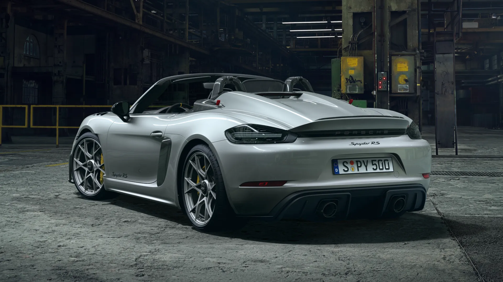
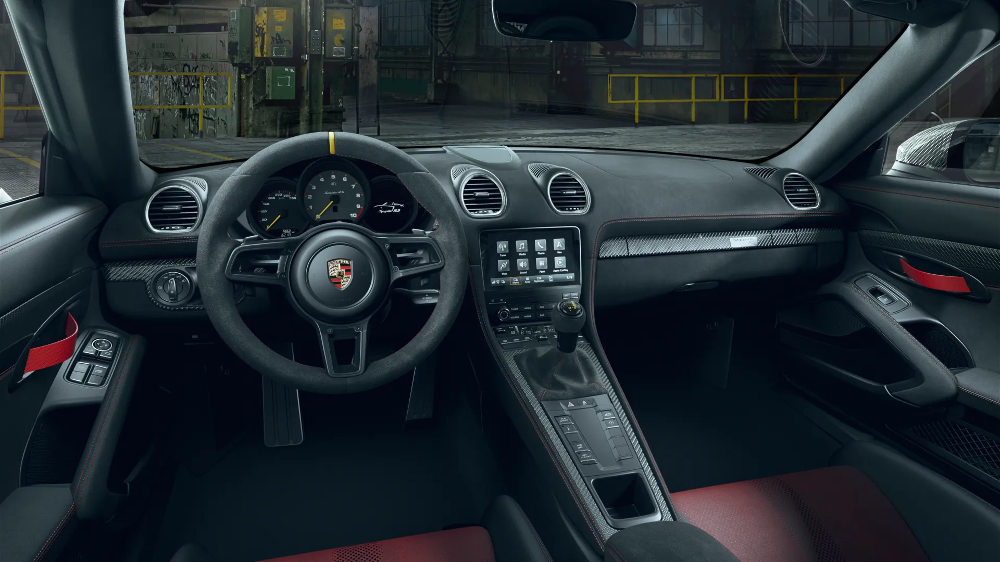
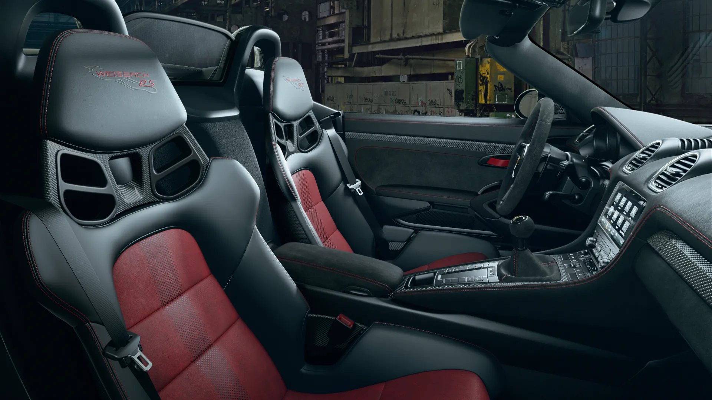

Présentation
La Porsche 718 Spyder RS est la version ultime et radicale du 718 Boxster, combinant un design ouvert, une légèreté extrême, et surtout, le moteur atmosphérique d’une GT3. C'est une voiture conçue pour le plaisir de conduite pur, offrant des sensations brutes et une connexion directe avec la route.
Caractéristiques
- 🚗 Puissance : 500 chevaux
- ⚡ Accélération : 0-100 km/h en 3.4 sec
- 🏎 Vitesse Max : 308 km/h
- 🛠 Transmission : Automatique
- 🎨 Couleurs disponibles : Argent GT métallisé
Galerie Photos



